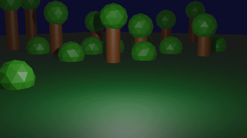
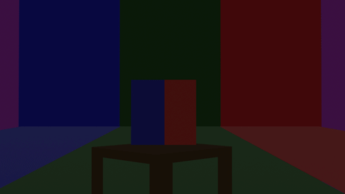
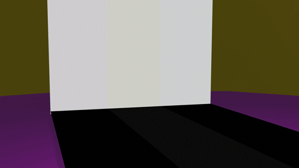

Ufo Moves

This is the ufo gif we went over in class and it takes place during the night in a forest. The ball is rollling onto the scene
and is being taken by the ship
Colors Change

This is a muti-colored cube that is is controlling the wall in the backround. This is me trying to really get ahold of timing between0 different
objects keyframes.
Light Up
 This contains a ball rolling across the a multi paneled floor which is supposed to be triggering the walls and floor to light up. This
is me continuing to mess with keyframes on multiple objects and trying to make them feel like they are interacting with each other.
Back to main page
© 2019 GitHub, Inc.